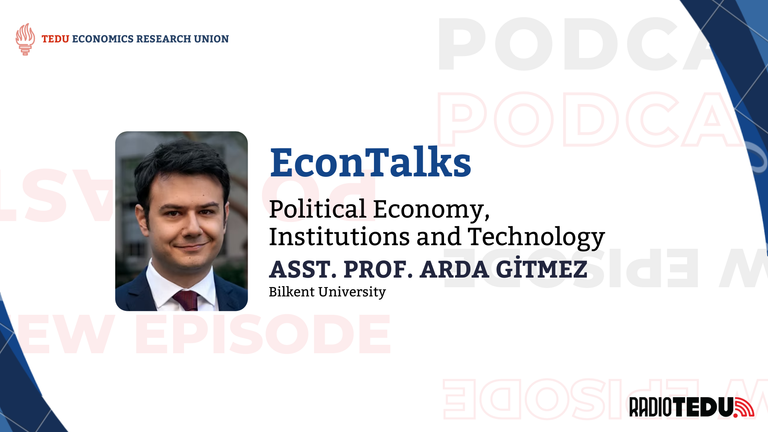
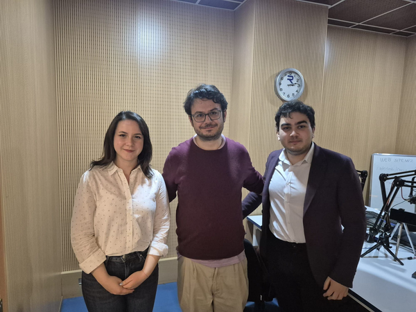

Political economy is often described as the point where economic reasoning meets political institutions, social conflict, media, technology, and collective decision-making. Asst. Prof. Gitmez defines himself primarily as a microeconomist working on political economy applications, market design, and the intersection of these fields. His academic path, beginning with engineering and later moving toward economics, also reflects one of the central themes of the conversation: economics does not exist in isolation.
In this FieldTalks episode, we hosted Asst. Prof. Dr. Arda Gitmez from Bilkent University's Department of Economics to discuss how economists think about politics, institutions, information, persuasion, polarization, and artificial intelligence. Throughout the conversation, Asst. Prof. Gitmez emphasized that political economy is not only about elections or governments. It is also about how institutions shape incentives, how media organizations build credibility, how citizens interpret incomplete information, and how technological change may redefine the meaning of production, work, and citizenship.

Economics does not exist in isolation. It borrows tools, questions, and intuitions from mathematics, engineering, sociology, philosophy, and political science.
From engineering to economics
Asst. Prof. Gitmez's path into economics began with a familiar uncertainty faced by many students: choosing a university department before fully knowing what that field means in practice. Although he initially studied electrical and electronics engineering, he gradually realized that he was more interested in social questions and the behavior of people and institutions.
Economics became attractive because it allowed him to keep a mathematical and analytical way of thinking while turning toward social problems. In his words, economics offered a bridge: it preserved the modeling intuition of engineering while opening space to think about society, politics, and human behavior.
What exactly is political economy?
One of the central questions of the episode was how to define political economy. Dr. Gitmez noted that even within academia, the boundaries of political economy are not always easy to draw. Historically, the term has carried different meanings: at one point, "political economy" was almost synonymous with economics itself; later, it became associated with heterodox and Marxist traditions; today, in his own work, it is closer to neoclassical political economy.
For Asst. Prof. Gitmez, the most useful definition is methodological rather than purely thematic. Political economy, in this sense, means analyzing political problems with economic tools. These problems may include voter behavior, electoral systems, politicians, institutions, media, courts, social unrest, or propaganda. The defining feature is not only the topic, but the use of economic reasoning to understand political and institutional questions.
The conversation also touched on whether other disciplines are moving toward economics or whether economics is increasingly absorbing other fields. Dr. Gitmez argued that economics still has much to learn from other social sciences. While economists have often borrowed from mathematics, physics, or neuroscience more easily, they have been less open to sociology, philosophy, and other disciplines that study meaning, norms, and social structure. This matters because many political economy problems cannot be understood only through formal models. Questions of polarization, media influence, technological legitimacy, and institutional trust often require economists to step outside their comfort zone.
Information asymmetry, persuasion, and everyday life
A major theme of the episode was information asymmetry: situations where one side knows something that the other side does not. Asst. Prof. Gitmez explained that this is not only an abstract economic concept. It appears in education, politics, media, hiring, and everyday communication.
One example he discussed is signaling. A university degree may not only show what someone learned; it may also signal that the person has the ability or discipline to learn. He also discussed "cheap talk" and evidence-based persuasion, where people can infer meaning not only from what is said, but also from what is not shown. If someone claims something but cannot provide evidence, the absence of evidence itself becomes informative. This idea becomes especially powerful in politics and media. A political actor, a campaign, or a media institution does not persuade only through direct statements. It also persuades through repetition, omission, selective evidence, and the balance between credibility and bias.
Media strategy: Between credibility and persuasion
Asst. Prof. Gitmez's research interests include strategic communication, political persuasion, media strategies, propaganda, and censorship. In the episode, he described a key trade-off for media organizations: they need to be persuasive, but if they appear too biased, they lose credibility.
A media organization that always repeats the same claim may eventually become less convincing, even to people who might otherwise be sympathetic. In strategic communication, credibility depends partly on restraint. Sometimes, not pushing a message too aggressively can make the message more believable. One of the most striking points of the conversation was the relationship between diversity of opinion and media behavior. Asst. Prof. Gitmez explained that when society contains a wider range of views, media actors may need to become more credible and less overtly biased to persuade audiences beyond their immediate base. In that sense, diversity of opinion can create incentives for more reliable communication.
Polarization or diversity?
The episode then moved to polarization, disinformation, and the digital public sphere. Dr. Gitmez warned that "polarization" is often used too freely. Different forms of disagreement should not automatically be treated as dangerous. Sometimes what we call polarization may actually be diversity, differentiation, or the ability of like-minded people to find each other more easily.
However, he also emphasized the real risk: societies may lose the belief that people with different views can still meet on common ground. The danger is not simply that people disagree. The deeper danger is that they stop believing agreement is possible at all. This distinction is especially important in the age of social media. Digital platforms allow people to connect, organize, and find communities. But the same platforms can also amplify extremism, reward outrage, and create incentives for attention-seeking behavior.
The discussion of social media led to the role of algorithms. Asst. Prof. Gitmez argued that the incentives of digital platforms often make the problem worse: engagement, visibility, and outrage can become more important than careful public reasoning. He did not present a simple solution, but suggested that political economy can help us ask the right questions. How much moderation is necessary? Who should decide the rules of digital platforms? How do platform incentives shape political behavior? These are not only technological questions; they are institutional and political economy questions.
Artificial intelligence and the future of work
On artificial intelligence, Asst. Prof. Gitmez was careful not to reduce politics to computation. Political economy begins from the fact that people have different preferences, and society must find ways to aggregate them. But some problems of collective decision-making involve real theoretical impossibilities and value judgments. Therefore, even very advanced AI systems cannot simply "solve" politics. He argued that AI may support decision-making, but it will not remove the need for political judgment.
The more urgent concern is elsewhere: automation, labor displacement, and the social meaning of productivity. If AI changes how people produce, work, and innovate, then societies may need to rethink what it means to be a "productive" or "reasonable" citizen. A future in which only a small group controls technological direction may deepen inequality and weaken democratic participation.
One of the strongest moments in the episode was the discussion of whether every technological change should automatically be called progress. Dr. Gitmez gave the example of self-checkout machines in supermarkets. If such technology does not make the consumer experience better and mainly reduces labor costs for firms, then we need to ask: progress for whom? This question connects technology to power. If only firms or technology elites define what counts as innovation, society may accept a narrow version of progress. Dr. Gitmez linked this concern to broader debates on automation, Silicon Valley, and the democratic governance of technological change.
Economics across disciplines
Toward the end of the conversation, the format became lighter but remained intellectually connected to political economy. Asked to name three economists, Dr. Gitmez mentioned Kenneth Arrow, Roger Myerson, and Thomas Fujiwara. Arrow stood out for his ability to formalize deep social questions mathematically; Myerson for his foundational contributions, especially in mechanism and auction design; and Fujiwara as an example of the more applied, empirical, and causal direction political economy has recently taken. Asked for films that can be read through a political economy lens, he mentioned Susuz Yaz, A Separation, and Leviathan. These films, in different ways, deal with property, power, social norms, bureaucracy, informal rules, and the pressure of institutions on individuals.

Asst. Prof. Gitmez's final advice to economics students was simple but powerful: learn to leave your comfort zone. For him, economics becomes stronger when economists engage with unfamiliar fields, methods, and ideas. He described this as a kind of "intellectual arbitrage": taking an idea from one field, understanding it seriously, and translating it into another context. This does not always need to be immediately strategic. Sometimes, reading, learning, and exploring something simply because it is interesting can later become intellectually valuable. For students of economics, the ability to move between fields may become one of the most important skills of the future.
This FieldTalks episode shows political economy not as a narrow subfield, but as a way of thinking about society. From media credibility to polarization, from AI to labor, from institutional design to student life, Dr. Gitmez's answers point to a common theme: economic tools become most meaningful when they help us understand real social conflicts, institutional constraints, and the future of collective life. As TED University Economics Research Union, we thank Asst. Prof. Arda Gitmez for joining FieldTalks and sharing his insights on political economy, institutions, and technology.